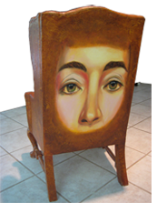

SOWA Events
Museums
Art Discourse
Discourse in and on Art
A very important aspect of being part of the art world as an artist, curator, gallery owner, or even collector is to be involved with the discourse of the present art world...this is what keeps work dynamic and alive and not merely an empty shell with assumed meaning based on some other person's rhetoric. We must not merely be nodding our heads, supporting 'the emperor that has no clothes', but should take an active critical thinking approach to what is being promoted as innovative or 'cutting edge'. Artists should have a voice of their own and not merely jump on the bandwagon of what is being promoted by someone who has power to give them exposure. With this in mind NKG is encouraging, over time, a series of venues to open the discourse on art in the 21st Century. Please participate with us. The future will be exciting and dynamic...
We are so familiar with our life that we become blind to the actual experience...
Theory of Interest
American Scholar Critical Theory Article
Peter Plagens Contemporary Art World
Peter Plagens Photography of John Coplans
John Seed - Andy Warhol and Marshall MacLuhan
Robert Hughes: The Mona Lisa Curse part 1, Part 2, Part 3, Part 4, Part 5,